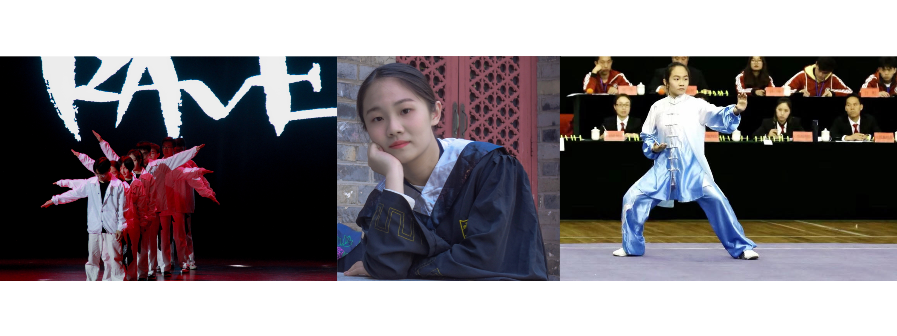

About Me
"The important thing is not to stop questioning."
My enthusiasm for Physics and Astronomy was first revealed in high school. Although very few universities in China have an Astronomy department, I determined to pursue a career in Astrophysics.
I finished my undergraduate studies at Nanjing University majoring in Astronomy and had research experiences in several different fields. I spent most of the time studying high energy astrophysics, including X-ray astronomy, Gamma-ray bursts and fast radio bursts. During my summer internship at UC Berkeley, I worked on the initial mass function at the Galactic Center, while my undergraduate thesis was about the self-organized criticality of X-Ray flares from Gamma-ray bursts.
Currently, I'm pursuing my PhD degree in Astrophysics at the University of Massachusetts, Amherst. During my first year, I focused on studying the starburst feedback in 30 Doradus through X-ray spectroscopy. For the second year, I moved on to my second research project about completing the protostar luminosity function in Cygnus-X using Infrared data. Right now, I'm working on my thesis project about the formation and evolution of galaxies. With the power of JWST imaging, I'm studying how gas, dust and morphology interact with star forming activities in the early universe.
In my spare time, I enjoy dancing and playing the violin. Besides, I love all kinds of sports, from martial arts to snowboarding.